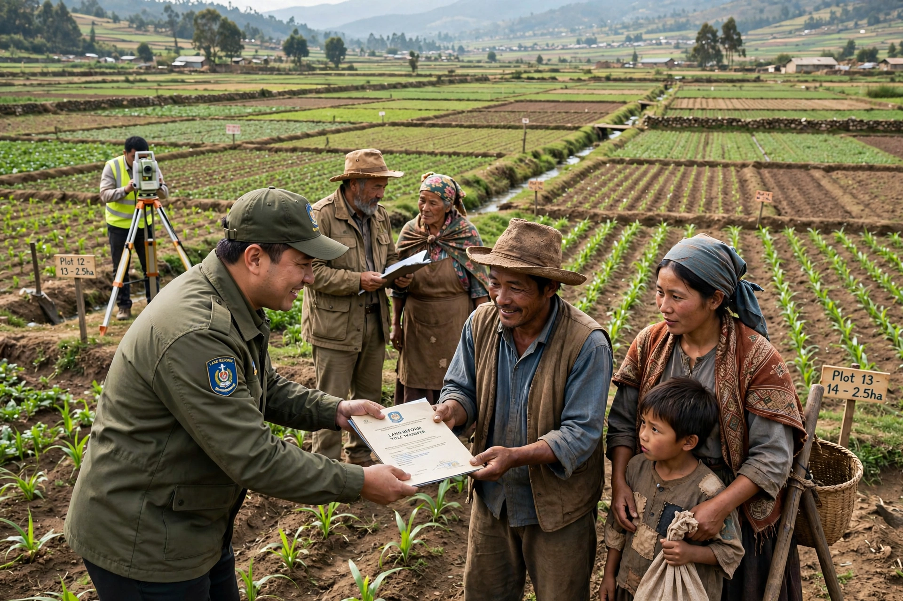

Land reform (or agrarian reform) involves the changing of laws, regulations or customs regarding land ownership, usually the redistribution of agricultural land from large landholders to those who work it.

| Scope | Worldwide |
|---|---|
| Forms | Redistribution, restitution, tenure reform, collectivisation |
Reforms range from market-assisted redistribution and restitution of land taken from dispossessed groups, to revolutionary expropriation and collectivisation. Motives include social justice, poverty reduction, food security, political stability and dismantling feudal structures such as the latifundium. Outcomes vary widely with compensation, credit and support for new farmers.
Major reforms include post-war programmes in Japan, Taiwan and South Korea credited with boosting equity and growth; Mexico's ejido system after its revolution; China's collectivisation and later household responsibility system; Scotland's community buyouts; and contested fast-track redistribution in Zimbabwe after 2000, associated with sharp agricultural decline. Land reform remains a live issue in South Africa, the Philippines and Brazil.